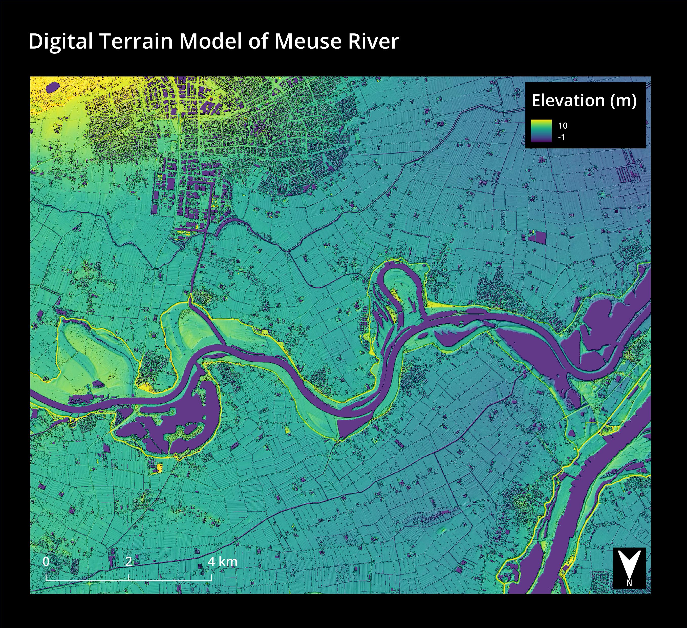
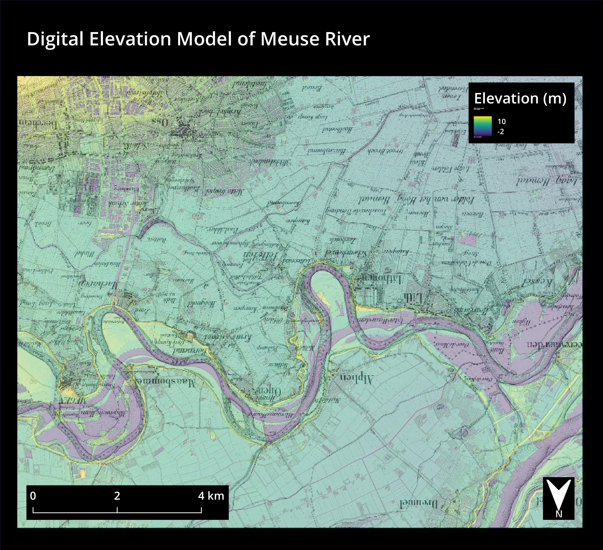
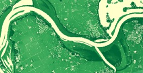
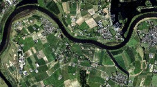
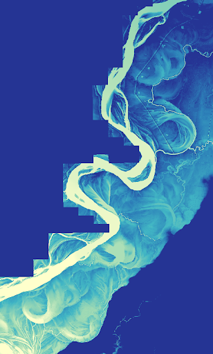
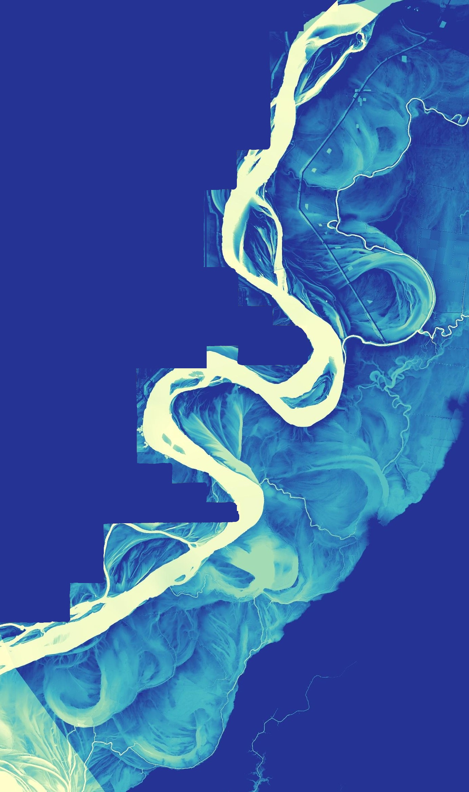

Digital Elevation Map
Digital elevation models (DEM) represent terrains and surfaces using the elevation at each point. Digital surface models (DSM) capture all the highest surfaces, including trees and buildings for instance. Digital terrain models (DTM) remove any above ground features such that only the ground is modeled. DEMs are useful in a number of fields, including urban planning and environmental modeling. In the maps below I use it to compare an old map with a current one.
DTM
The map below shows a DEM for a river near Den Bosch, part of the Meuse.
The data for this map were sourced from GeoTiles.
Comparison to old map
In the map below I used a DTM overlayed with a DSM hillshade, which gives the map a 3D appearance. As was found by my professor Dr. Britta, this highlights the main ground features, but also gives a shadow of the full surface. Next, an old map from 1841 was layerd on top for comaprison. The colors in the DEM were chosen to be color blind safe and because they highlight structures such as dykes, which pop prominently next to the river. Finally, note that the river flows from left to right in this map, resulting in the text being upsidown. The hope was that focus is then drawn away from the text and drawn to the river.
The old map was found on old maps online.
In the map above, notice how the course of the river changed since the old map was drawn. The old path is still clearly visible in the DEM, even though it is not as clear in satelite pictures. In places where the river has not changed course, the dykes still seem the exact same. Finally, there is a strangely high point of elevation in the top right corner. Though it is unclear what it is, based on google maps there certainly is elevation there but the historic map shows no evidence of it.
REM
Generally, as stated by Dan Coe, relative elevation models (REM) are used “to better visualize river features that are difficult to discern using an aerial photo or standard DEM.” Specifically it should help in discerning where river channels were in the past. As such the idea was to make the changes in the river’s path more visible and clear using an REM. However, since the water level did not change in the map, no distinguishable change was noticed after making the REM. However, the different color gradient chosen highlights the changes in river path well.
 Since I did not find any changes, I thought I would try the same method with a section of the Mississippi river to make sure I was doing it right. I chose the Mississippi river since Dan Coe analyzed it before and found interesting results and hidden layers, as written in a National Geographic magazine. Below, on the left is the DEM, on the right is the REM. Notice how in the DEM (left) the color of the river fades as the elevation decreases in the top right corner. On the other hand, in the REM the color stays more constant and the detail is preserved much better.
 Summary of new skills gained
In making these maps I learned a number of new skills, from importing and merging the data, to adjusting the map layers and settings to make the maps as clear as possible. Further, I learned how to georeference an old map to match the coordinates with a new one and allow for easy comparison. Finally I learned how to generate an REM by interpolating the data.